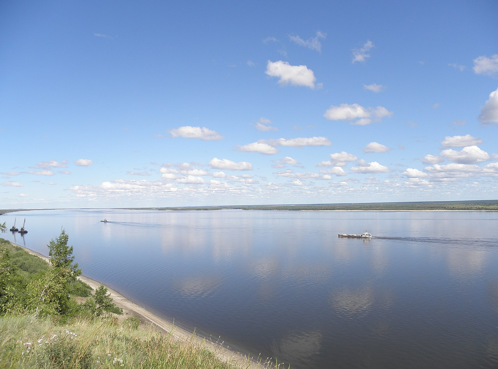

Лена
Ле́на[5] (якут. Улахан Өрүс[6] — «большая река»[7], якут. Өлүөнэ, Öлÿöнä[8]; бур. Зүлхэ; эвенк. Елюенэ[9]) — река в России, в Восточной Сибири[10], впадает в море Лаптевых Северного Ледовитого океана[11], образуя крупнейшую в Арктике дельту[12]. Длина вместе с дельтой — 4400[7] км. В некоторых случаях указывается длина 4294 км[13] без учёта Быковской протоки (106 км) в дельте Лены. Площадь бассейна — 2,49 млн км²[13]. Среднемноголетний сток равен 530,225 км³/год[1].
Днепр

Днепр (бел. Дняпро, Днепр[2][3], укр. Дніпро) — четвёртая по длине река Европы после Волги, Дуная и Урала, имеет самое длинное русло в границах Украины. Длина Днепра от истока до устья в естественном состоянии составляла 2285 (2139[4]) км, теперь (после постройки каскада водохранилищ[5]), когда во многих местах выпрямили фарватер — 2201 км; в пределах Украины — 1121 км[6], в пределах Белоруссии — 595 км (115 км находятся на пограничной территории Белоруссии и Украины), в пределах России — 485 км. Площадь водосборного бассейна — 504 000 км², из них в пределах Украины — 291 400 км²[7]. Средний расход воды в устье — 1670 м³/с. Уклон реки — 0,09 м/км[3].